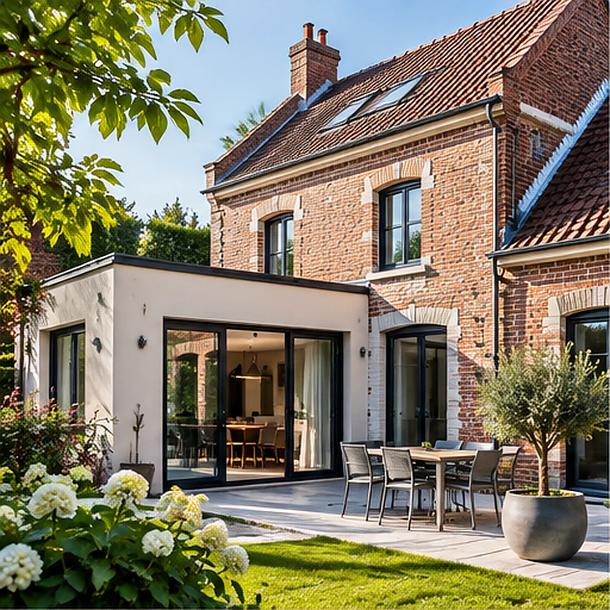

Travaux de maçonnerie et extension de maison autour de Lille
José Bati présente la maçonnerie comme l’un de ses principaux métiers, au service des projets de rénovation et d’agrandissement de l’habitat dans le Nord.
Faire évoluer l’habitat à partir d’une base solide.
Modifier une habitation ou envisager une extension suppose de bien définir les travaux de maçonnerie. Sur son ancien site, José Bati met en avant sa capacité à accompagner des projets de transformation du bâtiment et d’extension, avec plusieurs compétences réunies.
Le rôle de cette page est de présenter le champ de la maçonnerie générale dans la métropole lilloise et de relier naturellement les besoins de structure aux finitions et à l’aménagement.
Une vision coordonnée des travaux
Décrire l’existant, l’extension ou la transformation souhaitée.
Repérer les métiers de bâtiment associés au projet.
Anticiper les étapes de carrelage, de menuiserie ou d’aménagement selon les besoins.

Un projet qui relie l’existant et le nouvel espace.
La rénovation et l’extension d’habitat sont centrales dans la présentation historique de José Bati. Des travaux de maçonnerie jusqu’aux aménagements, une lecture globale permet de mieux organiser les interventions.
DÉCOUVRIR LA RÉNOVATION ↗Un projet de maçonnerie ou d’extension ?
La demande peut être préparée depuis le formulaire de contact de cette maquette.